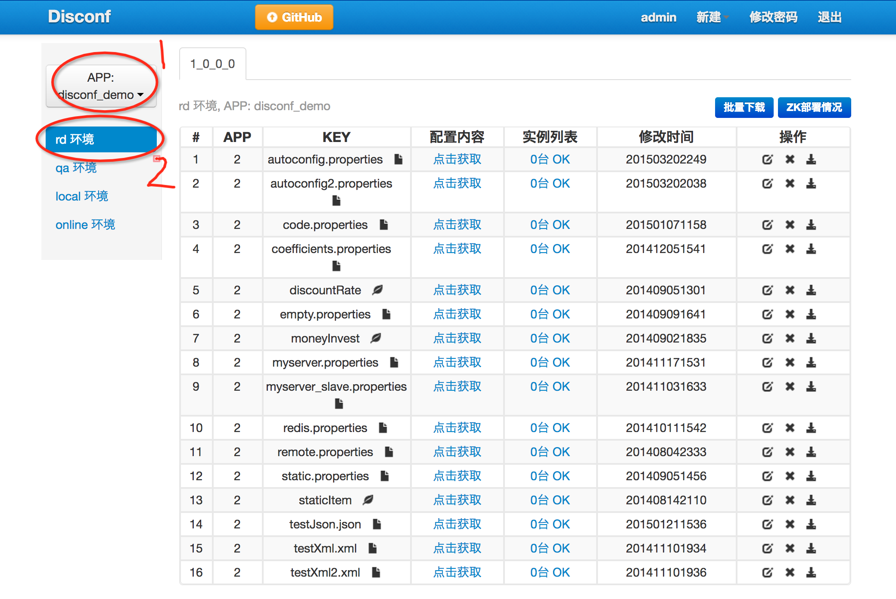

原文连接:https://www.cnblogs.com/bolingcavalry/p/11510213.html
Docker下的disconf实战全文链接
- 《Docker搭建disconf环境，三部曲之一：极速搭建disconf》；
- 《Docker搭建disconf环境，三部曲之二：本地快速构建disconf镜像》；
- 《Docker搭建disconf环境，三部曲之三：细说搭建过程》；
- 《Docker下使用disconf：极速体验》；
- 《Docker下使用disconf：细说demo开发》；
从体验开始
分布式配置管理平台Disconf会依赖redis,zookeeper,nginx,tomcat,mysql等服务，所以环境的配置和搭建略为麻烦，如果有现成镜像的话，用docker是个不错的方案，从本文开始，我们一起实践在docker上搭建disconf环境，本着由浅入深的原则，我们用三篇文章来经历三个过程：极速体验，本地快速构建，详细分析；
开始实践之前，请确认docker基础环境已装，如果从hub.docker.com上pull太慢建议用加速器，我用的是daocloud的加速器，详情在这里
现在咱们以最快的速度让disconf系统运行起来，创建一个文件docker-compose.yml，内容如下：
version: '2'
services:
disconf_redis_1:
image: daocloud.io/library/redis
restart: always
disconf_redis_2:
image: daocloud.io/library/redis
restart: always
disconf_zookeeper:
image: zookeeper:3.3.6
restart: always
disconf_mysql:
image: bolingcavalry/disconf_mysql:0.0.1
environment:
MYSQL_ROOT_PASSWORD: 123456
restart: always
disconf_tomcat:
image: bolingcavalry/disconf_tomcat:0.0.1
links:
- disconf_redis_1:redishost001
- disconf_redis_2:redishost002
- disconf_zookeeper:zkhost
- disconf_mysql:mysqlhost
restart: always
disconf_nginx:
image: bolingcavalry/disconf_nginx:0.0.1
links:
- disconf_tomcat:tomcathost
ports:
- "80:80"
restart: always然后打开终端，在这个文件的目录下执行:
docker-compose up -ddocker服务会去下载镜像再启动容器，执行完毕后打开浏览器输入"localhost"，就能看到如下效果：
[外链图片转存失败(img-XENuiaLH-1568252067005)(http://img.blog.csdn.net/20170502204311617?watermark/2/text/aHR0cDovL2Jsb2cuY3Nkbi5uZXQvYm9saW5nX2NhdmFscnk=/font/5a6L5L2T/fontsize/400/fill/I0JBQkFCMA==/dissolve/70/gravity/SouthEast)]
点击右上角的登录，用户名密码都是admin，进去后可以看到一些默认的配置数据，如下图：

至此，本地disconf环境已经搭建完成，停止和删除整个环境的操作也很简单，还是在docker-compose.yml文件的目录下，
停止整个环境的命令：
docker-compose stop删除整个环境的命令：
docker-compose rm以上就是极速搭建disconf的全过程，咱们一起先有个初步的印象，接下来的文章我们一起尝试在本地构建这些镜像，来达到相同的效果。
欢迎关注我的公众号